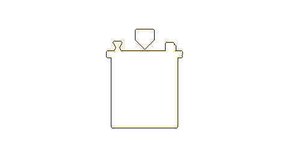
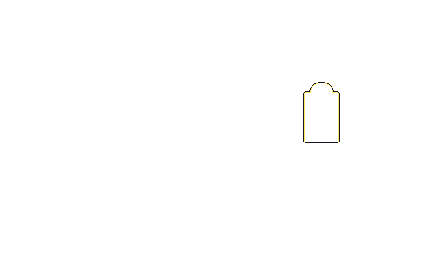
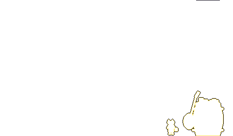

Трактирная книга — архив канала Лисья таверна
t.me/SMailsPubканал «Лисья таверна»картотека осевого
Доска у входа. В зале не кокать. Кокалку — на крюк. Осам не наливать. Плата — одна забытая вещь. Сдача не даётся. Гаврилычу не верить. Смеяться тихо. Осы.
читать всю доску →вести с тракта
- Манифест-рекомендация для тех, кто только начинает работать с ИИ-агентами
- ⭐️ Я ненавижу земляных мушек.
- Осень потихоньку начинает вступать в свои права, а я тем временем обустраиваю новый зелёный угол.
- Я попросил ИИ сделать GTA на районе и он почему-то её даже сделал
- Вы думали, мои эксперименты прекратились?
- Думал сегодня рассказать вам про 1-метилциклопропен — газообразное химическое вещество…
- В эту пятницу, в СПб будет большая конференция BIM на практике 2026, планирую заскочить и вас зову👍
- 🔥Продолжаем разбирать термины ИИ!😡 Ч2
Комнаты таверны

 Горница Ср · 45
Горница Ср · 45
 Игры Пт · 37
Игры Пт · 37
 Мастерская Сб · 34
Мастерская Сб · 34
 Архивы Чт · 134
Архивы Чт · 134
 Картотека поиск · 475
Картотека поиск · 475
 Очаг ✦ · 49
Очаг ✦ · 49 Экран Вс · 12
Экран Вс · 12
 Огород Вт · 58
Огород Вт · 58
 Полка Пн · 7
Полка Пн · 7
Каждая комната — зеркало. Чем больше свитков, тем крупнее.
Окно в общий зал наведи на предмет — и войди







 Картотека 475Огород 58Полка 7Очаг 49Архивы 134Экран 12Мастерская 34Игры 37Горница 45
Картотека 475Огород 58Полка 7Очаг 49Архивы 134Экран 12Мастерская 34Игры 37Горница 45
Свежий свиток
Манифест-рекомендация для тех, кто только начинает работать с ИИ-агентами
Здорово, солнышки!😎 За время своих экспериментов с агентами я для себя вывел несколько правил. Возможно, кому-то, кто только начинает собирать свою первую шайтан-коробку, они сэкономят немного времени, нервов и токенов. 🟠 Сначала…
Летопись
- ⭐️ Я ненавижу земляных мушек.
- Осень потихоньку начинает вступать в свои права, а я тем временем обустраиваю новый зелёный угол.
- Я попросил ИИ сделать GTA на районе и он почему-то её даже сделал
- Вы думали, мои эксперименты прекратились?
- Думал сегодня рассказать вам про 1-метилциклопропен — газообразное химическое вещество…
- В эту пятницу, в СПб будет большая конференция BIM на практике 2026, планирую заскочить и вас зову👍
- 🔥Продолжаем разбирать термины ИИ!😡 Ч2
- 🔥Хватит уже путать термины в AI!😡 Ч1
- ГЕРОЙ ШУТЛИВЫЙ ЛИСИВЫЙ!
- Доска у входа
- А теперь — тема «ИИ головного мозга» 🤡
- А вот и сам отчёт🤡
Статус
- чашадымит
- хвосттлеет
- Уголёкраскалён, молчит
- Фомичей11 · полив не решён
- Гаврилычуверен
- осыне слышно
Передача
«Был. Грелся. Кокалку забрал.» — С. А.
Хозяин
Лис Кальяныч
«Проходите, чаша дышит. Плата — одна забытая вещь.»
Трактирщик. Ростом взрослому по грудь. Прожжённая стёганка цвета старой хвои, поверх — фартук из клеёнки, на шее связка мундштуков. Говорит тихо и на «вы», голоса не повышает никогда, даже когда бьют посуду.
Указатель
- Листаем7Пн — книги, манга, манхва · #чтение
- Земля и тишина58Вт — сад и зелёные пиздюки · #сад
- Дым и покой45Ср — кальян и chill · #кальян
- Архивы разума134Чт — AI, агенты, АГР и пыльные записи · #ai
- Конец недели37Пт — игры и подкаст «Выдыхай» · #игры
- Дела руками34Сб — хобби и Warhammer · #хобби
- Лис в экране12Вс — аниме · #аниме
- Мысли у очага49мысли · #мысль
- Картотека Осевого475поиск по всему каналу